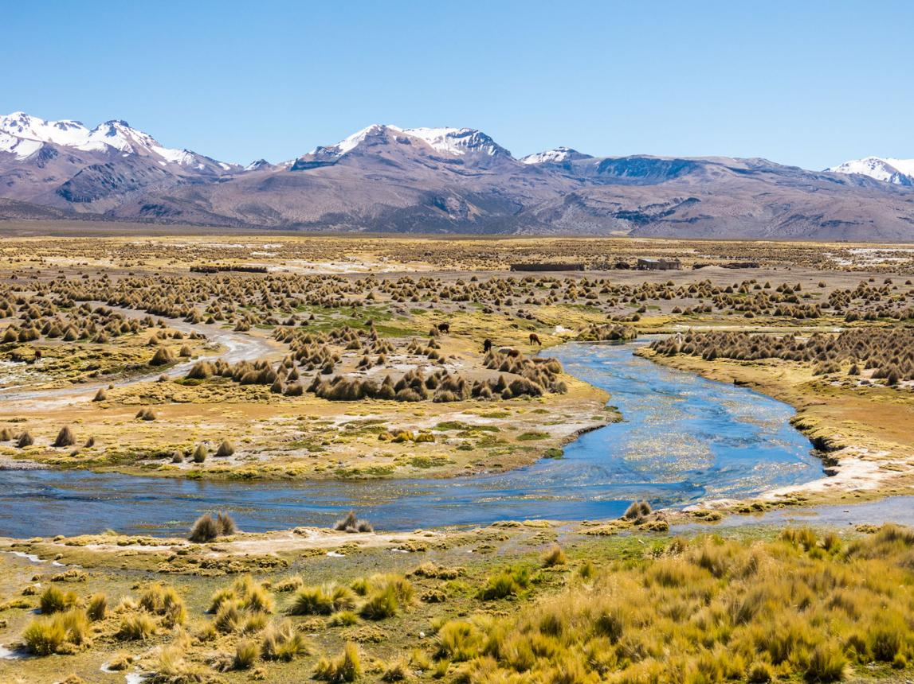

1. Quem são as Lhamas? Classificação Taxonômica
Integrantes da família Camelidae, compartilham ancestralidade comum com camelos e dromedários do Velho Mundo, porém integram a tribo exclusiva Lamini.
Classificação Científica Completa
ICZN Linnaeus, 1758Lama glama (Linnaeus, 1758)
* Nota Biológica: A subordem Tylopoda ("pés com almofadas") difere dos ruminantes convencionais porque os camelídeos não possuem cascos bipartidos rígidos com queratina maciça, mas sim unhas sobre almofadas de coxim plantar cartilaginoso.
Ancestralidade & Domesticação
O guanaco selvagem foi domesticado há cerca de 6.000–7.000 anos, selecionado pela robustez corporal e capacidade de carregar carga em alta altitude.
A vicunha deu origem à alpaca através da seleção artificial milenar focada na densidade, suavidade e riqueza de cores da fibra têxtil.
2. Diferenças entre os 4 Camelídeos Sul-Americanos
Como identificar com exatidão lhamas, alpacas, vicunhas e guanacos através do porte, orelhas, tipo de fibra e status ecológico (doméstico vs selvagem).
Lhama
Lama glama
Orelhas longas e curvadas em formato de banana. Focinho e pescoço longos e eretos.
1,0 m a 1,2 m na cernelha (cerca de 1,8 m até a cabeça). Peso de 130 kg a 200 kg. É o mais pesado e forte dos quatro.
Pelo grosso, densidade média. Grande variedade: branco, preto, castanho, bege, cinza e padrões malhados/manchados.
Animal de carga secular nos Andes, proteção de rebanho (guarda), lã rústica térmica, companhia e terapia.
Alpaca
Vicugna pacos
Orelhas curtas, retas e pontiagudas. Focinho curto e arredondado, conferindo aspecto dócil e jovial ("filhote").
0,8 m a 1,0 m na cernelha. Peso entre 50 kg e 85 kg (bem menor que a lhama).
Fibra extremamente densa, fina, macia e quente. Possui 22 cores reconhecidas. Variedades: Huacaya (fofa) e Suri (ondulada).
Produção têxtil de alto luxo internacional. Não é adequada para carga pesada.
Vicunha
Vicugna vicugna
Padrão bicolor: castanho dourado no dorso e bege/creme no peito. Dentes incisivos com crescimento contínuo.
0,75 m a 0,9 m na cernelha. Peso de apenas 35 kg a 65 kg. Esbelta e muito ágil.
Fibra ultraleve e preciosa (cerca de 120–260 g por animal, tosquiado a cada 2–3 anos). Sagrada pelos Incas, manejo exclusivo via Chaccu.
Punas remotas andinas. Grupos familiares (1 macho dominante + 5 a 15 fêmeas). Símbolo nacional do Peru.
Guanaco
Lama guanicoe
Um pouco menor que a lhama, porém mais esguio, com pernas longas e musculosas. Altura de 1,0 m a 1,3 m na cernelha e 90 a 140 kg.
Pelagem castanho claro no dorso, ventre branco e cabeça cinza. Sangue com altíssima taxa de eritrócitos para ar rarefeito.
Da Patagônia aos Andes e Deserto do Atacama. Passa dias sem água líquida, absorvendo umidade das plantas.
Vive em haréns (1 macho dominante + harém) ou bandos de machos solteiros. Ancestral direto da lhama.
| Espécie | Condição | Altura (cernelha) | Peso Adulto | Orelhas | Qualidade da Fibra | Uso Tradicional |
|---|---|---|---|---|---|---|
| Lhama | Doméstica | 1,00 m – 1,20 m | 130 – 200 kg | Longas e arqueadas ("banana") | Grossa / Rústica (térmica) | Carga, guarda, ponchos, tração |
| Alpaca | Doméstica | 0,80 m – 1,00 m | 50 – 85 kg | Curtas, retas e triangulares | Muito fina, sedosa, 22 cores | Vestuário de luxo, fios de exportação |
| Vicunha | Selvagem | 0,75 m – 0,90 m | 35 – 65 kg | Médias e delicadas | A mais cara e fina do mundo | Preservação, tosquia ritual Chaccu |
| Guanaco | Selvagem | 1,00 m – 1,30 m | 90 – 140 kg | Eretas e alertas | Curta e áspera (dupla pelagem) | Fauna ecológica nativa, sobrevivência |
3. Onde Vivem? Hábitat, Altiplanos e Baixo Impacto Ecológico
Integrando o infográfico original de distribuição geográfica e as adaptações ecofisiológicas que tornam a criação de lhamas um modelo de sustentabilidade.
Onde vivem?
- As lhamas são animais domesticados, criados há milhares de anos.
- Sua origem está na Cordilheira dos Andes, na América do Sul.
- Vivem em ambientes de altitude, frios e secos, com vegetação rasteira.

Peru, Bolívia, norte do Chile e noroeste da Argentina, além de partes do Equador. Por ser 100% doméstica, não existe lhama selvagem isolada na natureza, estando presente onde há assentamentos humanos e sistemas pastoris de altitude.
Pastejo sem Arrancar a Raiz
Corte com dentes incisivos inferiores e placa dura superiorDiferente de bovinos e equinos que muitas vezes arrancam o tufo com raízes, a lhama apara apenas as pontas das gramíneas. Isso permite que as pastagens de altitude se regenerem rapidamente sem desertificação.
Coxim Plantar Macio (Sem Casco Rígido)
Almofadas macias protegem o solo contra erosãoAs patas das lhamas possuem almofadas macias que distribuem o peso suavemente sobre os terrenos íngremes e frágeis dos Andes. Não provocam compactação de solo nem voçorocas, preservando as encostas.
Eficiência Hídrica Superior
Herança fisiológica dos camelosRins altamente eficientes e capacidade de concentrar urina reduzem a perda de água. Ainda assim, lhamas criadas precisam de água limpa à vontade; a capacidade de passar longos períodos obtendo água das plantas é mais marcante nos parentes selvagens (guanaco e vicunha).
Interações Ecológicas no Ecossistema de Altitude
Bioma Puna • 3.500 m a 4.800 m de altitudeSimbiose obrigatória com bactérias, protozoários e fungos que digerem celulose dura e fibrosa das plantas andinas, aproveitando nitrogênio que outros herbívoros eliminariam.
Predadas por pumas (Puma concolor) e raposas-andinas (filhotes). Sua resposta é o alarme sonoro característico de alta frequência e investida física protetora.
Defecam comunitariamente no mesmo local (letrinas). Essas áreas acumulam matéria orgânica concentrada que fertiliza solos de altitude pobres, gerando nichos para flora rara.
Ao ingerirem frutos e sementes em vales e pastagens, depositam-nas viáveis e adubadas quilômetros adiante, viabilizando a manutenção da flora andina em relevos íngremes.
Consomem arbustos lenhosos e pasto seco de média altura, evitando competição direta com alpacas (que demandam grama macia de áreas úmidas/bofedales) e ovinos.
Seu instinto territorial inato faz com que adotem grupos de ovelhas e cabras, enfrentando ativamente canídeos e reduzindo perdas de produtores sem armas químicas ou armadilhas.

Bofedales e vegetação rasteira adaptada a altitudes superiores a 3.800 metros.
4. Comportamento, Nutrição Gástrica e Reprodução
Particularidades vitais: ovulação induzida pelo coito, gestação longa de quase um ano, parto diurno adaptativo e estômago tricompartimentado.
Digestão dos 3 Compartimentos (Pseudoruminantes)
Diferença em relação aos bovinos (4 compartimentos)Grande cuba de fermentação anaeróbica rica em microbiota simbiótica. Realiza contrações vigorosas para misturar e amolecer fibras rústicas com auxílio de glândulas saculares secretoras de bicarbonato.
Compartimento intermediário que filtra partículas, continua a ação tamponante e permite a re-mastigação e ruminação do bolo alimentar.
Tubo alongado onde os 4/5 iniciais absorvem água e eletrólitos, e o quinto final atua como o verdadeiro estômago ácido (homólogo ao abomaso bovino), digerindo proteínas e bactérias sintetizadas no C1.
Sensibilidade extrema ao Cobre (Cu): Camelídeos acumulam cobre no fígado mais facilmente que bovinos, predispondo à intoxicação cúprica hemolítica fatal. Nunca utilize suplementos minerais de ovinos ou bovinos formulados com alto teor de cobre livre!
Proibição de Ionóforos: Monensina e lasalocida provocam cardiomiopatia e morte súbita em lhamas.
Reprodução & Ciclo Neonatal
Mecanismos adaptativos únicosEstimulada mecanicamente e pelo fator NGF presente no sêmen durante a cópula.
Quase 11,5 meses de gestação. Filhote único ("cria").
Atinge puberdade cedo; a primeira cobertura é recomendada entre 14 e 24 meses, quando a fêmea atinge cerca de 60% do peso adulto.
Adaptação evolutiva para que o filhote seque sob o sol antes do congelamento noturno andino.
O filhote nasce com cerca de 8 a 12 kg e deve mamar o colostro nas primeiras 4 a 6 horas para absorção passiva de imunoglobulinas. O desmame natural ocorre entre 5 a 7 meses. As mães são extremamente zelosas, emitindo vocalizações guturais ("humming") para acalmar o filhote.
5. Criação, Usos Zootécnicos e Manejo no Brasil
Por que criar lhamas? Da proteção de rebanhos de ovinos à terapia assistida e produção de lã rústica em regiões serranas brasileiras.
Cuidado que acompanha cada etapa
Nutrição equilibrada, água limpa e assistência veterinária são essenciais para a saúde das lhamas.
Do pasto aos primeiros dias de vida da cria, o manejo atento faz diferença.
O Papel da Lhama como Animal de Guarda
Propriedades rurais utilizam amplamente lhamas para guardar ovelhas, cabras e aves contra cães errantes, raposas e outros predadores. Ao identificar um predador, a lhama emite um som estridente de alarme, encara a ameaça de cabeça erguida, corre em sua direção e pode afugentá-la com coices e pisoteio.
- Come a mesma pastagem do rebanho (sem ração cara).
- Não exige treinamento complexo nem cercas de alta contenção.
- Instinto protetor natural e vínculo imediato com o gado menor.
Utiliza-se um único macho castrado (ou fêmea não lactante) por lote. Duas lhamas juntas socializam entre si e ignoram as ovelhas!
Lã & Artesanato Térmico
Fibra oca com excelente isolamento térmico, sem lanolina (hipoalergênica). Perfeita para ponchos andinos, casacos pesados, tapetes, mantas artesanais e fiação rústica de alto valor afetivo.
Pet Exótico & Terapia Assistida
Extremamente silenciosas, dóceis e higiênicas (usam o mesmo canto para fezes). Por não morderem agressivamente e terem olhar expressivo, são utilizadas em asilos e centros de reabilitação motora e psicológica.
Criação de Lhamas no Brasil
Totalmente viável, com destaque para as Serras Gaúchas, Catarinenses e Mantiqueira (RS, SC, PR, SP, MG). Climas com noites frescas favorecem seu bem-estar, exigindo apenas sombreamento e tosquia anual antes do verão.
Perguntas Frequentes de Manejo e Instalações Rurais
Precisam de muito espaço? Pasto ou curral?
Podem ser criadas na proporção de cerca de 4 a 6 lhamas por hectare em pastagens bem manejadas. Precisam de acesso contínuo a piquetes abertos; confinamento integral em baias gera estresse esteriotipado e problemas articulares.
Pode criar machos e fêmeas juntos?
Não de forma permanente! Machos inteiros perseguem constantemente fêmeas e machos jovens, podendo causar abortos ou brigas territoriais. Separam-se lotes de fêmeas reprodutoras, machos castrados/rebanho e machos reprodutores em piquetes distintos.
Como é feita a reprodução? Inseminação ou monta?
Predomina a monta natural controlada. A fêmea deita em posição de kush durante a cópula, que dura de 15 a 45 minutos. A inseminação artificial é pouco usada: o sêmen é viscoso e difícil de diluir e congelar, e a ovulação, por ser induzida, precisa ser provocada com hormônios. Quando feita, a técnica habitual é transcervical (o colo uterino tem 2 a 3 anéis).
Rentabilidade comercial e custos
O custo de alimentação é muito baixo comparado a equinos (apenas 1,8% a 2% do peso vivo em matéria seca por dia). O retorno financeiro dá-se pela venda de matrizes e reprodutores selecionados, serviços de guarda, animais para ecoturismo e artesanato fino de lã.
Por que as lhamas cospem?
O cuspe da lhama não é saliva comum, mas sim conteúdo regurgitado da primeira câmara gástrica (C1), com odor ácido e esverdeado. Trata-se de um mecanismo de defesa e hierarquia social usado para repelir outros membros na disputa por comida ou dizer "não" às investidas indesejadas de machos. Com humanos bem socializados, cospem rarissimamente.